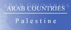
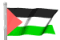

The Country & People of Palestine
We want peace but we do not want this peace process
A lasting peace is one which is just and fair for all
and as long as Israel is enforcing peace their way
the Palestinians have to fight for theirs
Israel's peace process is Surrender or War
Palestinian's peace process is UN Resolutions 194, 242, 338....
Why does the USA strictly implement UN resolutions everywhere except where Israel is concerned?
This page contains links to sites in Palestine and Palestine related sites.
For Middle East, North Africa, Arab and regional information visit Arab Countries
Hints:
- Use the "FIND" function in the Edit menu of your browser to search the page
- Use translating services in Chrome or Bing Bar in Internet Explorer to view page and/or linked websites in your language
General Info
* Business
* Culture
* Education
* History
* Media
* Organizations
* Travel
* Gateways
* Arab Countries
Palestine, historic region on the eastern shore of the Mediterranean Sea, at various times comprising parts of modern Israel, the West Bank and Gaza (recognized internationally by nations as independent Palestine), Jordan, and Egypt; also known as the Holy Land. The name is derived from a word meaning land of the Philistines. This article discusses mainly the geography and the history of Palestine until the United Nations took up the Palestine problem in 1947.
In the Bible, Palestine is called Canaan before the invasion of Joshua; the usual Hebrew name is Eretz Israel [land of Israel]. Palestine is the Holy Land of Jews, having been promised to them by God according to the Bible; of Christians because it was the scene of Jesus' life; and of Muslims because they consider Islam to be the heir of Judaism and Christianity and because Jerusalem is the site, according to Muslim tradition, of Muhammad's ascent to heaven. The Holy Land derives its special character from being a place of pilgrimage. Shrines, shared in common by several religions, cluster most numerously in and about Jerusalem, Bethlehem, Nazareth, and Hebron.
The earliest known inhabitants of Palestine were of the same group as the Neanderthal inhabitants of Europe. By the 4th millennium BC Palestine was inhabited by herders and farmers. It was in the 3d millennium that most of the towns known in historical times came into existence. They became centers of trade for Egyptian and Babylonian goods. During the 2d millennium, Palestine was ruled by the Hyksos and by the Egyptians. Toward the end of this period Moses led the Hebrew people out of Egypt, across the Sinai, and into Palestine.
Around 1200 BC, the Philistines (Sea Peoples) invaded the southern coastland and established a powerful kingdom. The Hebrews were subject to the Philistines until c.1000 BC, when an independent Hebrew kingdom was established under Saul , who was succeeded by David and then by Solomon . After the expansionist reign of Solomon (c.950 BC), the kingdom broke up into two states, Israel, with its capital at Samaria, and Judah, under the house of David, with its capital at Jerusalem. The two kingdoms were later conquered by expanding Mesopotamian states, Israel by Assyria (c.720 BC) and Judah by Babylonia (586 BC).
In 539 BC the Persians conquered the Babylonians. The Jewish Temple, destroyed by the Babylonians, was rebuilt (516 BC). Under Persian rule Palestine enjoyed considerable autonomy. Alexander the Great of Macedon, conquered Palestine in 333 BC His successors, the Ptolemies and Seleucids, contested for Palestine. The attempt of the Seleucid Antiochus IV (Antiochus Epiphanes) to impose Hellenism brought a Jewish revolt under the Maccabees , who set up a new Jewish state in 142 BC The state lasted until 63 BC, when Pompey conquered Palestine for Rome.
Palestine at the time of Jesus was ruled by puppet kings of the Romans, the Herods. When the Jews revolted in AD 66, the Romans destroyed the Temple (AD 70). Another revolt between AD 132 and 135 was also suppressed, Jericho and Bethlehem were destroyed, and the Jews were barred from Jerusalem. When Emperor Constantine converted to Christianity (312), Palestine became a center of Christian pilgrimage, and many Jews left the region. Palestine over the next few centuries generally enjoyed peace and prosperity until it was conquered in 614 by the Persians. It was recovered briefly by the Byzantine Romans, but fell to the Muslim Arabs under caliph Omar by the year 640.
At this time (during the Umayyad rule), the importance of Palestine as a holy place for Muslims was emphasized, and in 691 the Dome of the Rock was erected on the site of the Temple of Solomon, which is claimed by Muslims to have been the halting station of Muhammad on his journey to heaven. Close to the Dome, the Aqsa mosque was built. In 750, Palestine passed to the Abbasid caliphate, and this period was marked by unrest between factions that favored the Umayyads and those who preferred the new rulers.
In the 9th cent., Palestine was conquered by the Fatimid dynasty, which had risen to power in North Africa. The Fatimids had many enemies—the Seljuks, Karmatians, Byzantines, and Bedouins—and Palestine became a battlefield. Under the Fatimid caliph al Hakim (996–1021), the Christians and Jews were harshly suppressed, and many churches were destroyed. In 1099, Palestine was captured by the Crusaders (see Crusades ), who established the Latin Kingdom of Jerusalem. The Crusaders were defeated by Saladin at the battle of Hittin (1187), and the Latin Kingdom was ended; they were finally driven out of Palestine by the Mamluks in 1291. Under Mamluk rule Palestine declined.
In 1516 the Mamluks were defeated by the Ottoman Turks. The first three centuries of Ottoman rule isolated Palestine from outside influence. In 1831, Muhammad Ali, the Egyptian viceroy nominally subject to the Ottoman sultan, occupied Palestine. Under him and his son the region was opened to European influence. Ottoman control was reasserted in 1840, but Western influence continued. Among the many European settlements established, the most significant in the long run were those of Jews, Russian Jews being the first to come (1882).
In the late 19th cent. the Zionist movement was founded with the goal of establishing a Jewish homeland in Palestine, and dozens of Zionist colonies were founded there. At the start of the Zionist colonization of Palestine in the late 19th cent., the rural people were Arab peasants (fellahin). Most of the population were Muslims, but in the urban areas there were sizable groups of Arab Christians (at Nazareth, Bethlehem, and Jerusalem) and of Jews (at Zefat, Tiberias, Jerusalem, Jericho, and Hebron).
At the same time Arab nationalism was developing in the Middle East in opposition to Turkish rule. In World War I the British, with Arab aid, gained control of Palestine. In the Balfour Declaration (1917) the British promised Zionist leaders to aid the establishment of a Jewish national home in Palestine, with due regard for the rights of non-Jewish Palestinians. However, the British had also promised Arab leaders to support the creation of independent Arab states. The Arabs believed Palestine was to be among these, an intention that the British later denied.
In 1919 there were about 568,000 Muslims, 74,000 Christians, and 58,000 Jews in Palestine. The first Arab anti-Zionist riots occurred in Palestine in 1920. The League of Nations approved the British mandate in 1922, although the actual administration of the area had begun in 1920. As part of the mandate Britain was given the responsibility for aiding the Jewish homeland and fostering Jewish immigration there. The British stressed that their policy to aid the homeland did not include making all Palestine the homeland, but rather that such a home should exist within Palestine and that there were economic limits on how many immigrants should be admitted (1922 White Paper).
In the 1920s, Jewish immigration was slight, but the Jewish communities made great economic progress. In 1929 there was serious Jewish-Arab violence occasioned by a clash at the Western, or Wailing, Wall in Jerusalem. A British report found that Arabs feared the economic and political consequences of continued Jewish immigration with its attendant land purchases. Zionists were angered when a new White Paper (1930) urged limiting immigration, but they were placated by Prime Minister Ramsay MacDonald (1931).
The rise of Nazism in Europe during the 1930s led to a great increase in immigration. Whereas there were about 5,000 immigrants authorized in 1932, about 62,000 were authorized in 1935. Arabs conducted strikes and boycotts; a general strike in 1936, organized by Haj Amin al Husayni, mufti of Jerusalem, lasted six months. Some Arabs acquired weapons and formed a guerrilla force. The Peel commission (1937), finding British promises to Zionists and Arabs irreconcilable, declared the mandate unworkable and recommended the partition of Palestine into Jewish, Arab, and British (largely the holy places) mandatory states. The Zionists reluctantly approved partition, but the Arabs rejected it, objecting particularly to the proposal that the Arab population be forcibly transferred out of the proposed Jewish state.
The British dropped the partition idea and announced a new policy (1939 White Paper). Fifteen thousand Jews a year would be allowed to immigrate for the next five years, after which Jewish immigration would be subject to Arab acquiescence; Jewish land purchases were to be restricted; and within 10 years an independent, binational Palestine would be established. The Zionists were shocked by what they considered a betrayal of the Balfour Declaration. The Arabs also rejected the plan, demanding instead the immediate creation of an Arab Palestine, the prohibition of further immigration, and a review of the status of all Jewish immigrants since 1918.
The outbreak of World War II prevented the implementation of the plan, except for the restriction on land transfers. The Zionists and most Arabs supported Britain in the war (although Haj Amin al Husayni was in Germany and negotiated Palestine's future with Hitler), but tension inside Palestine increased. The Haganah, a secret armed group organized by the Jewish Agency, and the Irgun and the Stern Gang, terrorist groups, were active. British officials were killed by the terrorists. The horrible plight of European Jewry led influential forces in the United States to lobby for support of an independent Jewish state, and President Truman requested that Britain permit the admission of 100,000 Jews. Illegal immigration, often involving survivors of Hitler's death camps, took place on a large scale. The independent Arab states organized the Arab League to exert internationally what pressure they could against the Zionists.
An Anglo-American commission recommended (1946) that Britain continue administering Palestine, rescind the land-transfer restrictions, and admit 100,000 Jews, and that the underground Jewish armed groups be disbanded. A plan for autonomy for Jews and Arabs within Palestine was discussed at a London conference (1947) of British, Arabs, and Zionists, but no agreement could be reached. The British, declaring their mandate unworkable and despairing of finding a solution, turned the Palestine problem over to the United Nations (Feb., 1947). At that time there were about 1,091,000 Muslims, 614,000 Jews, and 146,000 Christians in Palestine.
The United Nations Special Committee on Palestine devised a plan to divide Palestine into a Jewish state, an Arab state, and a small internationally administered zone including Jerusalem, and the General Assembly adopted the recommendations on Nov. 29, 1947. The Jews accepted the plan; the Arabs rejected it. As the British began to withdraw early in 1948, Arabs and Jews prepared for war.
On May 14, 1948, when the British high commissioner for Palestine departed, the state of Israel was proclaimed at Tel Aviv. Lebanon, Syria, Jordan, Egypt, and Iraq invaded Israel, as most Palestinian Arabs were driven from Jewish territory. By the time armistice agreements were reached (Jan., 1949), Israel had increased its holdings by about one-half. Jordan annexed the Arab-held area adjoining its territory, and Egypt occupied the coastal Gaza Strip in the southwest.
On June 5, 1967, Israel struck against Egypt and Syria; Jordan subsequently attacked Israel. In six days, Israel occupied the Gaza Strip and the Sinai peninsula of Egypt, the Golan Heights of Syria, and the West Bank and Arab sector of E Jerusalem (both under Jordanian rule), thereby giving the conflict the name of the Six-Day War. Israel unified the Arab and Israeli sectors of Jerusalem, and Arab guerrillas stepped up their incursions, operating largely from Jordan.
In Dec., 1987, a popular Palestinian uprising (Intifada) began against Israeli rule in the occupied territories. Peace talks between Israel, Syria, Lebanon, and a joint Jordanian-Palestinian delegation began in Aug., 1991. Rioting and clashes with Israeli troops continued into the 1990s. An accord between Israel and the Palestine Liberation Organization (PLO), reached in 1993 after secret negotiations, led to the establishment of the PA and limited self-rule in the West Bank and Gaza Strip in mid-1994. Agreements providing for a transfer of control to Palestinians in the West Bank town of Jericho and the Gaza Strip, and then in the other West Bank cities and towns (except East Jerusalem), were finalized in 1994 and 1995 and largely implemented by early 1996. In Mar., 1996, Israel sealed off many towns in the West Bank following a series of suicide bombings inside Israel. Most of Hebron was handed over to the Palestinians in 1997 and, in a 1998 accord, Israel agreed to withdraw from additional West Bank territory. Despite Israeli military incursions into Palestinian territory and attacks on Palestinian authorities and forces, Palestinian attacks on Israelis in Israel and the occupied territories did not end, and in 2002 Sharon's government ordered the reoccupation of West Bank towns in a new attempt to stop those attacks.
Israel's construction of a security barrier in the West Bank became an international issue in 2003. It was begun in 2002 in the N West Bank, where it paralleled the border, and around Jerusalem, but its planned extension south and into the West Bank to protect Israeli settlements brought widespread condemnation because of West Bank territory it would enclosed and the many Palestinians whose lives would be disrupted. An International Court of Justice opinion (2004), requested by the UN General Assembly, termed barrier illegal, in part because it enclosed Palestinian territory. Israeli court decisions several times ordered the wall partially rerouted because of the hardship it would cause.
The Israeli group Peace Now asserted in November that, according to government documents, nearly 40% (and perhaps more) of the land on which Israel's West Bank settlements were built was privately owned Palestinian land, in violation of Israeli law. More current information given by the government to the group in Mar., 2007, indicated that private land made up more than 30% of the settlements but did not indicate how much was Palestinian-owned (the vast bulk of the private land in the first set of documents was Palestinian).
In Jan., 2004, Israeli Prime Minister Sharon announced a plan for the withdrawal of all Israeli settlers and troops from the Gaza Strip, and it was subsequently adopted by his government. The settlements were evacuated in Aug., 2005, and Israeli forces withdrew the following month. The Strip threatened to descend into anarchic violence after the withdrawal, with the Palestinian Authority unable to exert effective control over the territory. The Gaza Strip also continued to be a source of attacks against Israel and suffer retaliatory Israeli attacks. These escalated into open warfare in June, 2006, after Hamas guerrillas captured an Israeli soldier and Israel invaded the Gaza Strip, and in the following months Israel continued to mount operations into the territory.
The situation in Gaza became economically dire as a result of continual conflict (some of it between Hamas and Al Fatah) and the restricted funding available to the Palestinian Authority. In June, 2007, the fighting between Palestinians ended with Al Fatah's defeat, placing the Gaza Strip under Hamas's control. The region nonetheless continued to be the scene of intra-Palestinian conflict, and Israel subsequently restricted the flow of goods into Gaza to humanitarian aid.
Mahmoud Abbas was elected president in 2005 after Arafat's death. He and Israeli Prime Minister Sharon subsequently agreed to a truce, and in Mar., 2005, Israeli forces began handing over control of Jericho and other West Bank towns to the PA. Subsequent violence, however, halted and reversed the process. A few Israeli settlements in the N West Bank were evacuated in 2005 in conjunction with the Israeli withdrawal from the Gaza Strip, but the number of Israeli settlers continued to increase.
The takeover of the Gaza Strip by Hamas forces in June, 2007 led to increased talks with the Palestinian Authority and other moves designed to strengthen President Abbas, as well as Israeli restrictions on cross-border trade into the Gaza Strip. In early 2008, in response to Hamas rocket attacks, Israel tightened its blockade of goods into the Gaza Strip, but that move and Israeli retaliatory attacks failed to stop the rocket attacks. In June, 2008, a six-month cease-fire was established with Israel that included a partial reopening of the border. The cease-fire largely held until a significant outbreak of fighting in Nov., 2008, and was officially ended the next month. Late in Dec., 2008, Israel mounted an offensive against Hamas, with ground operations in Jan., 2009. Some 1,300 persons, about half of whom were civilians, died in the Gaza Strip before Israel and Hamas separately declared cease-fires in mid-January and Israeli forces withdrew; more than 20,000 buildings were damaged or destroyed. Both sides subsequently were accused of war crimes by international human-rights organizations and a UN fact-finding mission.
By mid-2009, Israel had eased its control over a number of towns while not restoring full PA control. That same year Israel halted new settlement construction for ten months while negotiations occurred; construction subsequently resumed. Israel's continuing approval of new construction in the West Bank led to U.S. criticism in Nov., 2009, that Israel was frustrating peace negotiations. The government subsequently suspended new construction for 10 months, but the exclusion of East Jerusalem from the moratorium and the continuing construction of buildings already begun was denounced by the Palestinians. When the moratorium ended in Sept., 2010, there had been little progress if any in negotiations, and a year later the Palestinian Authority unsuccessfully sought recognition from, and full membership in, the United Nations.
In response to ongoing rocket attacks from region, Israel tightened its blockade of the Gaza Strip in Jan., 2008; the resulting shortages led Hamas to force open the Egyptian border, which had mainly been closed since 2005, for several days. In May, 2010, a Turkish aid convoy challenging the blockade was boarded in international waters in a deadly raid by Israeli forces. The raid, which was widely condemned internationally, focused global attention on the blockade; Egypt subsequently reopened its border crossing, and Israel eased its blockade on imports somewhat.
In 2011 the PA unsuccessfully sought recognition from, and full membership in, the United Nations as part of its wider drive for international recognition in the face of stalled peace negotiations with Israel, but in 2012 it received de facto recognition as independent Palestine from the UN General Assembly. It also was admitted to membership in the International Criminal Court in 2015. Peace negotiations, meanwhile, have not progressed.
Sporadic rocket and mortar attacks and Israeli air strikes, as well as minor cross-border incursions, continued. In Nov., 2012, Israeli air strikes, including one that killed the Hamas military chief, sparked the most intense cross-border attacks in four years. After the Palestinian Authority received de facto recognition as an independent state from the UN General Assembly in Dec., 2012, the Israeli government authorized the development of thousands of new settler homes in East Jerusalem and the West Bank.
In mid-2013, U.S.-brokered peace talks resumed, but by Apr., 2014, they had essentially collapsed amid increased demands from Israel on retaining areas in the West Bank, Israeli approval for new settlements in the West Bank, a stalled Israeli prisoner release program, and a Palestinian bid for further recognition from UN agencies. A new round of cross-border attacks began in July, 2014, after Israeli blamed Hamas for the murder of three teenage settlers in the West Bank and launched air strikes against the Gaza Strip, leading to a ground offensive by Israel; a cease-fire was established in August. Some 2,200 died in the fighting, the majority Palestinian civilians.
Following the firebombing of a Palestinian home in July, 2015, a series of clashes and of attacks against Israelis erupted in the West Bank and Israel, the attacks continued into 2016. In 2017 Netanyahu's goverment approved guidelines that allowed the largely unconstrained building of new housing in existing West Bank settlements; it has also moved forward with new Israeli housing in East Jerusalem. U.S. President Trump's recognition of Jerusalem as Israel's capital in Dec., 2017, was praised by Israeli leaders but denounced by Palestinians. In the first half of 2018, Israeli strikes against Iranian forces in Syria led to a rocket attack on the Golan Heights and a subsequent Israeli retaliation against Iranian targets in Syria. Hamas mounted mass marches against the Israeli-Gaza border in March–May; more than 100 Gazans were killed and thousands wounded by Israeli fire. In late May, the marches were followed by exchanges of shelling and bombardment by Gaza militants and Israeli forces until a ceasefire was established; a second outbreak of such exchanges occurred in July.
********
Copyright (c) 2012 Columbia University Press.
Used by permission of Columbia University Press.
General Info
Cities, towns, municipalities, places, flag, maps, useful Information....
Business
Economy, reports, statistics, banks, directories, jobs, investment, promotion....
Culture
General resources, heritage, art, literature, photography, cinema, music, song, dance, cultural, scientific,
environmental, sporting entities & info....
Education
Schools, colleges, academies, universities, polytechnics, institutions, research, resources, projects....
History
Ancient & modern history, human rights, politics & political parties, related sites, articles....
Media
Newspapers, magazines, news, newsletters, news agencies, radio, TV, internet, articles, reports, cartoons....
Organizations
Government, ministries, overseas missions, embassies, corporations, organizations, industrial entities, centers,
public hospitals, institutions, societies, foreign entities....
Travel
Airlines, air, sea & coach charters services, travel, tours, guides, hotels, resorts, inns, hostels, health,
travel tips, weather....
Gateways
Gateways, search engines and directories to country related sites and information....
Arab Countries
Arab World: Middle East, North Africa, Arab and regional information. Resources to other Arab countries....
About Palestine
General Information Also see Travel
- Interactive Encyclopedia of the Palestine Question Explore thousands of events, biographies, highlights, places and primary documents
- Welcome To Palestine Welcome to the Largest Online Encyclopaedia of Palestine and growing
Cities, Towns, Municipalities & Places
- Bethlehem Municipality Profile, twin cities, churhes, tourism....
- Church of the Holy Sepulchre Jerusalem: the place of both the crucifixion and the tomb of Jesus of Nazareth
- Gaza Municipality Information regarding the city of Gaza
- Jericho Municipality Oldest city in the world. Tourism, historical sites, pictures....
- Kammana Village Location, history, links....
- Kufr Qassem History....
- Nablus City Old city, history, photo album, health, technology, business directory, tourism
- Nablus Municipality The city, history, activities....
- Noble Sanctuary The online guide to Al-Aqsa mosque in Jerusalem
- Salfeet Municipality Introduction, administration, entrances, income, projects, services, settlements, topography, news
- Villages Al-Bireh, Birzeit, Jifna, Ein Kinya, Al-Taybeh, Aboud, Deir Dibwan, Dura Al-Qari, Ras Karkar, Ein Sinya
Flag, Maps, Useful Information....
- Palestine - Notes and Coins Lists of coinage and information about the Palestine Pound
- Flag Common, state and presidential flags, history, 1916-1948....
- Maps of Palestine Maps of the region of Palestine from ancient times until the rise of modern surveying techniques
General Info
* Business
* Culture
* Education
* History
* Media
* Organizations
* Travel
* Gateways
* Arab Countries
Business and Economy
General, Economy, Reports & Statistics
- Chamber of Commerce & Industry - Ramallah/Al-Bireh Governorate To supply high quality local and international trade services
- Federation of Palestinian Chambers of Commerce, Industry and Agriculture Participating cities, business directory....
- Palestine Exchange Companies trading on the Palestine Stock Exchange
- The World Bank West Bank & Gaza: Overview, news & events, data & statistics, publications & reports....
Banks
- Arab Bank News, currency rates, locations....
- Bank of Palestine Branches, services, history....
- National Bank of Palestine Comprehensive financial services for the corporate, retail, investment, and microfinance sectors
Directories, Job Opportunities
- Companies of Palestine Directory of Palestinian companies on the web (Worth a visit)
- Gaza Strip Tourism, services and professionals Directory
- Palestine Yellow Pages Categorized listings
Investment & Promotion....
- Arab Palestinian Investment Co. APIC - Opportunities, indicators, goals, experience....
- Palestine Development & Investment Company PADICO
- Palestine Real Estate Investment Co. PRICO - Real-Estate Development and Investment
- Palestinian Investment Promotion Agency Provide investors with both a comprehensive one-stop-shop and Aftercare services....
- Palestinian Trade Development Centre PalTrade
General Info
* Business
* Culture
* Education
* History
* Media
* Organizations
* Travel
* Gateways
* Arab Countries
Art, Culture & Sport
General Resources, Heritage....
- Centre for Cultural Heritage Preservation Awareness-raising campaigns to draw attention to the cultural heritage for the future of Palestinian society
- Palestine Costume Archive Features over two hundred years of Palestinian design and examines traditional costumes and embroidery....
- Palestinian Embroidery Promotes Palestinian culture, especially the art of Palestinian embroidery....
- Palestinian Heritage Foundation Palestinian costumes (USA)
Art, Literature, Photography, Cinema....
- Hisham Zreiq (Zrake) Palestenian Film maker and Artist
- Ismail Shamout Art in Palestine, biographies, paintings, sketches, exhibitions....
- Marwan Kishek Fine Art - Profile, exhibition: natural scenery, holy art, realism....
- Handala by Naji Al-Ali Life, works, cartoons, books and poems....
- Nihad Dukhan Contemporary Arabic Calligraphy
- Tamam Al-Akhal The artist, exhibitions, gallery....
- Poetry 4 Palestine By Hayam. Epics and Poems in Cause of Justice....
- Popular Art Centre Al-Bireh. To develop individuals skills and knowledge and their cultural and artistic abilities
- Alaa Badarneh Photojournalist, documentary films and stories with many of the international agencies and newspapers
- Steve Sabella A Palestinian art photographer. The Great March of Return (2020)
- Jerusalem Gate Pictures of Jerusalem, Palestinian personalities....
- Palestine Photo Project Images from a collection of pre -1948 photographs in a book and prints
- Trip to Palestine Trip records and experiences in vivid detail, complimented by nearly a thousand photographs....
- Arab Film Distribution - Israel Features a wide range of narrative films, documentaries, visual essays and ethnographic films
- Arab Film Distribution - Palestine Features a wide range of narrative films, documentaries, visual essays and ethnographic films
Music, Song & Dance....
- Doc Jazz A committed Palestinian songwriter who sings about the occupation and about the Intifadah and Real people who have a right to be free
- Issa Boulos 'ud player, composer and teacher
- Marwan Abado Singer, composer and oud player....
- Reem Banna Singer, lyricist and composer - Award, Life and Discography
- Ruba Hatem A voice from Palestine - Songs, story, articles....
- Anasheed from Palestine National songs
- El-Funoun Palestinian popular dance troupe
- Yabous A non-profit organization for the production of performing arts, aiming to revive and enrich the cultural life in Palestine
- Zahrat Al-Mada'en Folkloric Dance Troupe Dance to help revive the Arabic culture and heritage. Traditional Palestinian music.
Cultural, Scientific, Environmental, Sporting Entities & Info
- Alternative Tourism Group (ATG)- Study Center Produces researches and publications related to Palestinian tourism and alternative tourism.
- ARIJ Institute To effectively disseminate information and knowledge to the Palestinian society
- The Canadian Palestinian Cultural Association Foster a strong, inclusive community that promotes Palestinian cultural heritage, history, and causes
- Centre for Architectural Conservation RIWAQ - Virtual exhibition, Nablus....
- Dar Al-Nadwa (International Centre of Bethlehem) Strengthening the Palestinian identity, cultivating artistic talent....
- East Jerusalem YMCA A vibrant and integral part of the Palestinian social movement....
- Sareyyet Ramallah- First Ramallah Group Serves as a multi-purpose cultural, social and sports centre
- Juthour Center for Arts & Culture To develop the status of Palestinian woman culturally, socially and economically
- Palestine Sports For Life esponds to developmental needs in the marginalized Palestinian communities through sport and life skills
- Popular Art Centre “dance school” offers popular, creative and modern dancing, such as Palestinian Dabke, Ballet
- Animal Info Threatened species, environmental and social data
- Birds of Palestine To determine the priorities for bird conservation in the region
- Gazelle - The Palestinian Biological Bulletin Information about the Biology and Ecology of Palestine, concentrating on the Zoology of the region
- Mahmiyat Raising Environmental Awareness, Eco Tourism, Bird Watching, Biodiversity....
- Palestine Wildlife Society Dedicated and effective in its objective of raising environmental and wildlife awareness. Conserve species, habitats and sites program
- Palestinian Animal League Palestine's only locally-run animal protection organisation
- Palestinian Environmental NGOs Network coordinating body among different Palestinian NGOs working in the field of environment
- History of Palestine Sports Highlighting and documenting Palestinian sports since the first decade of the 20th
- Football Palestine News & Analysis. The latest on Al-Fida'i, Palestinian players abroad, and the local Palestinian leagues
- Palestine Sports Network Local sport news
- Palestinian Tennis Association To enhance and promote Tennis
General Info
* Business
* Culture
* Education
* History
* Media
* Organizations
* Travel
* Gateways
* Arab Countries
Education
Schools, Colleges, Academies, Universities & Polytechnics
- The School of Joy (Al-Farah) To improve the overall quality of life for students who have low academic achievement in greater Bethlehem area
- Bethlehem Bible College Interdenominational Christian Bible college, located in Bethlehem, Palestine
- Bethlehem Bible College Gaza branch
- Hisham Hijjawi College Of Technology Professional and technical education through programs that combine theory and application
- Ibrahimieh Community College Jerusalem: Institute of higher education
- Al-Najah National University Nablus: Faculties, colleges, research laboratories, technical centres, activities....
- Al-Quds Open University It provides education through an Open and Distance Learning system
- Al-Quds University Creating opportunities for students to learn in and out of the classroom
- Arab American University Jenin. High standards of education as well as access to majors that are not available locally
- Bierzeit University A wide range of academic programs and professional development opportunities
- Hebron University It's fundamental policy is that no student be prevented from learning for financial reasons
- Palestine Academy for Science and Technology Acts as a catalyst for the advancement of science, technology and innovation in Palestine
- Palestine Polytechnic University Hebron: Meets the needs of the community for technicians in various fields of engineering
- Palestine Technical University - Kadoorie The only governmental University in the West Bank and the only Technical university in Palestine
- University College of Science and Technology Distinctive technical programs
Institutions & Organizations
- German Academic Exchange Service Students got the chance to learn about studying and life in Germany
- Palestinian Academic Society for the Study of International Affairs PASSIA - Academic research and dialogue
Research, Resources & Projects
- Jerusalem Quarterly File Scholarly articles on Jerusalem's history and trends currently shaping the city
General Info
* Business
* Culture
* Education
* History
* Media
* Organizations
* Travel
* Gateways
* Arab Countries
History, Human Right & Politics
Ancient & Modern....
- Ahmad Al-Shukairy Biography of the man who laid the corner stone for the Palestinian Liberation Organization
- Balfour Declaration 1917 Statement issued by the British government promising Palestine away
- CNN Israeli Palestinian conflict: Two viewpoints; one tragic outcome
- Palestine Remembered Educating the world about towns and villages destroyed in 1948, their inhabitants and history
- World History Encyclopedia - Palestine Early History....
- World Statesmen Israel, Jerusalem, Palestinian Authority - Flags, chronology, rulers, governors, ministers....
Civil, Human & Prisoners' Rights....
- Addameer Prisoners Support and Human Rights Association offering support for Palestinian prisoners....
- Al-Haq Concerned with the protection and promotion of the principles of human rights and the rule of law
- Amnesty International 1 Israel and the Occupied Territories
- Amnesty International 2 Stae of Palestine
- Association of Civil Rights in Israel reedom of conscience, expression, human dignity, detention....
- Association of Forty Arab unrecognized villages, achievements, policy of discrimination, projects, publications....
- B'tselem The Israeli Information Centre for Human Rights in The Occupied Territories
- Center for Economic and Social Rights To harness the power of human rights to inspire fairer and more sustainable economies
- Democracy & Workers' Rights Centre Defend Palestinian workers’ rights and promote principles of democracy, social justice and equality
- FreeGaza.Org To raise international awareness about the prison-like closure of the Gaza Strip
- Human Rights Watch Israel, Occupied Territories & Palestinian Authority: exposes tyranny, empower victims
- International Solidarity Movement Committed to the principles of nonviolent resistance, where Palestinians are subject to consistent harassment or attacks from soldiers and settlers
- Israeli Committee Against House Demolitions A direct-action group opposing Israeli demolition of Palestinian houses, settlement expansion, uprooting of trees...
- Jews Against the Occupation Advocating peace through justice for Palestine and Israel
- Machsom Watch Politically pluralistic within the context of opposition to the occupation and a commitment to human rights
- Mandela Institute for Human Rights Organize regular lawyers' and doctors' visits to Palestinian and Arab prisoners in Israeli prisons
- Palestinian Centre for Human Rights (PCHR) Promote the rule of law in accordance with international standards
- Palestinian Independent Commission for Citizen's Rights PICCR - Newsletter, publications, reports
- Physicians for Human Rights Israel Promote the right to health is granted equally to all people under Israel’s responsibility.
Action groups, events and activities
- Alliance for Middle East Peace A community of peacemakers advancing Middle East peace through interaction, information and inspiration
- Jews for Justice for Palestinians Lasting peace between Israel and the Palestinians requires justice, mutual recognition and respect
- Stop the Wall Anti-Apartheid Wall Campaign aims to Stop the Wall, Dismantle parts already built, Return all lands confiscated and Compensate for all losses
Refugees....
- Badil Resource centre for Palestinian residency and refugee rights
Intifada, Massacres, Memorials....
- Deir Yassin Remembered In all over 100 men, women, and children were systematically murdered....
- IntifadaOnline Brings you the Palestinian side of the story....
Political Parties & Groups
- Hadash - Democratic Front for Peace and Equality To unite supporters for peace, equality and democracy Jews and Arabs
- One Democratic State Campaign Political, social, economic and cultural justice, in which Palestinians and Israeli Jews live in equality.
Zionism....
- Committee for Open Debate on the Holocaust Zionism, Stalinism and the Holocaust Story, The Consequences, articles and commentary
Related Sites, Articles....
- BBC - In Depth Israel & the Palestinians - Analysis, stories, profiles, documents, links....
- Edward Said Archive, articles, editorials, interviews, bibliographies, biographies....
- Israel-Gaza Crisis - United Nations Responsibility to use all its influence to prevent further escalation and end this crisis
- A Personal Diary of the Israeli Palestinian Conflict By Nigel Parry
- Research Guide to the Palestinian-Israeli Conflict News, stories, comments and articles by Robin Miller
- Vermonters for a Justice in Palestine Committed to the principles of self-determination for the Palestinian people
General Info
* Business
* Culture
* Education
* History
* Media
* Organizations
* Travel
* Gateways
* Arab Countries
Visit Arab Media for satellite stations & Arab newspapers
Media
Newspapers, Magazines....
- +972 Magazine Run by a group of Palestinian and Israeli journalists working to oppose occupation and apartheid
- Akhbar Al-Naqab Bi-Weekly newspaper - Be'r Al-Sabee'
- Al-Ayyam Daily newspaper - Ramallah
- Al-Karmel Quarterly magazine - Literature
- Al-Manar Weekly - Political
- Al-Quds Daily newspaper - Jerusalem
- Al-Quds Al-Arabi Daily newspaper - UK
- Al-Risala Weekly newspaper - Naqab
- Dunya Al-Watan Daily newspaper - Gaza
OnLine News, Newsletters, News agencies....
- Aqlam Al Thaqafiyya Magazine A cultural magazine - stories, articles, forums....
- Al-Buraq Daily online news, reports, economy, technology, Arab gateway....
- If Americans Knew Provide information that is to a large degree missing from American press coverage of this critical region
- Jerusalem Times Internet edition
- Kibush - The Occupation Magazine A group of Israeli anti-occupation activists disturbed by the misrepresentation of events by the Israeli and US media
- Maán News Agency Promoting understanding of the Palestinian situation by strengthening cooperation between local and international media
- Our Jerusalem Today's top news stories from Jerusalem, Israel and the Arab World - An Israeli site
- Palestine Chronicle Editorials, articles & news from Palestine, the Middle East and beyond....
- Palestine Free Voice Local news from Palestine, poetry, artm litterature, music, heritage....
- Palestine-Israel Journal Culture, economics, archive, links
- Palestinian Information Center Daily news, political analysys, Palestinian Question, human rights, Zionist terrorism....
- The Palestine Monitor Disseminating messages and unified responses to the press about local developments coming from Palestinian civil society
- Palestine News Network Politics, Prisoners, Human Rights, Culture, Opinion, Nonviolence, Reports, International, Economy....
- Palestine News Agency - WAFA News, economy, politics, photos, documents, geography, cities, archives, weather, annual reports....
- This Week in Palestine Articles, events, directory, tourism, statistics, in the limelight....
- Voice of Palestine Latest news, articles, live TV, archives, polls....
Radio, TV, Internet....
- Pal TV The Palestinian Broadcasting Corporation. Live TV, News, Programmes, Sport....
- Radio & TV Amwaj The most popular private radio and TV service in Palestine
- TMFM 97.7 Radio Tariq Al Mahabbeh (Love Lane). Curfew days, special interviews, news, articles, children....
Articles, Reports, Cartoons, Media related sites....
- Baha Boukhari Cartoon Featuring Abu-Arab, Abu Al-Abed, Arab & international themes....
- Electonic Intifada The war in the media for a representation of the Palestinian point of view....
- Institute for Middle East Understanding (IMEU) Provides journalists with quick access to information about Palestine and the Palestinians
- Institute of Palestine Studies (IPS) Readerships consisting of academics, experts, students, activists, writers, and journalists
- Palestinian Information Center News coverage of mainly Palestinian events advocating the Palestinian cause from a multi-layered lens
- Palestine Media Watch Keep an eye on biased and unfair opinion pieces, columns and stories on the Palestinian crisis
- Ray Hanania's The Daily Hookah Writings, literature, speeches, books, issues....
- Women Behind The Wall A glimpse into the lives of Palestinian christian women living under the Israeli occupation.
General Info
* Business
* Culture
* Education
* History
* Media
* Organizations
* Travel
* Gateways
* Arab Countries
Visit Arab Organizations for Pan-Arab, Middle East, North Africa and regional organizations
Government & Organizations....
Government, Ministries, Overseas Missions, Embassies....
- Council of Ministers Meetings and Decisions, Media Center, Government Strategy, Studies and Articles
- Ministry of Foreign Affairs and Expatriates Foreign relations, key documents, articles,diplomatic missions, newsletter....
- Ministry of Health Directorates, researches, technical assistant project, statistics....
- Ministry of Information Palestine basic info, who's who at PNA, Jerusalem, Palestinian cause worldwide....
- Ministry of Interior Responsible for internal affairs, such as public security, civil registration and identification....
- Ministry of Justice Ministry E-Services
- Ministry of Local Governorate Minister's biography, concept of local government, general policy, objectives, duties,structure
- Ministry of Social Development Social protection for the Palestinian people
- Ministry of Telecommunication & Information Technology Responsible for managing, regulating and developing the telecommunications, information technology and postal sector
- Ministry of Tourism & Antiquities Visit the main cities, events, travel information, directory....
- Office of the President The Planning Centre - Opinion, abstract, publications
- Palestine Monetary Authority Encouraging economical development
- Palestinian Central Bureau of Statistics (PCBS) Statistics on demographic, social, economic and environmental trends
- Palestinian Economic Council for Development & Reconstruction PECDAR - Activity & economic reports....
- Palestinian Energy Authority Providing the citizens of Palestine with reliable electricity at affordable prices
- Palestinian Legislative Council Elections, releases, library, members, committees, laws, international affairs....
- PLO Negotiations Affairs Department (NAD) To follow up on the implementation of the Interim Agreement signed between Israel and the PLO.
- General Delegation of Palestine to Australia, New Zealand and The Pacific Cooperation and understanding between the people of Palestine and these countries
- Permanent Mission of Palestine to the UN Information on important issues related to Palestine and the UN
- PLO Delegation of Palestine to USA Consular affairs and resources
United Nations & Foreign....
- Programme of Assistance to the Palestinian People UNDP - The Programme of Assistance to the Palestinian People
- United Nations Population Fund (UNFPA Palestine) Focusing on demographic training, maternal and child health care and family planning in the occupied territory
- United Nations on the Question of Palestine Overview, resolutiions, UNISPAL, NGOs....
- British Council in Occupied Palestinian Territories Partnership with Palestinian people in the development of their society and institutions
- U.S. Office of Palestinian Affairs Manage Diplomatic Relations with the Palestinian Authority.
Peace Process....
Visit Arab Peace Process for regional issues
- Americans & Palestinians for Peace AMPAL - Supports all peaceful efforts to achieve an independent Palestinian state
- Foundation for Middle East Peace Dedicated to informing Americans about the Israeli-Palestinian conflict
- Gush Shalom Who & what, news & updates, publications & archives, links
- Oasis of Peace A cooperative village of Jews and Palestinian Arabs of Israeli citizenship.
- Ta'ayush Israelis & Palestinians striving together to end the Israeli occupation and to achieve full civil equality
- Visions of Peace with Justice in Israel/Palestine One in which Jews and Palestinians share the land of Israel/Palestine
Relief Organizations, Charities, Societies....
- Interpal Empower Palestinians facing poverty and hardship across the West Bank, Gaza Strip and the refugee camps in Jordan and Lebanon
- Joint Advocacy Initiative Advocate for human rights and dignity, equal value of all human beings, mutual respect....
- Palestine Red Crescent Society Health, social and other humanitarian services for the Palestinian People in the ME
- Palestinian Diaspora & Refugee Centre SHAML - Facts, figures, photo album, activities, publications, links....
- Saraya Centre for Community Services Serve mainly women, children and youth of Arab Jerusalem
- United Palestinian Appeal Help Palestinians meet their relief and development needs (USA)
- United Nations Relief and Works Agency - UNRWA The main aid provider for millions of Palestinians in Gaza and the region
- USAID - West Bank and Gaza Empowers Palestinians to build thriving communities, promote development and advance a two-state solution
Industry Related....
- Applied Research Institute ARIJ - Promotes self-reliance of Palestinians through greater control over their natural resources
- MA’AN Development Centre To develop training workshops in the areas of marketing and business skills (Ramallah & Gaza)
- Palestine Power Generation Company (PPGC) One of the most important pillars of the Palestinian economy
- Palestine Standards Institution Accredited testing facilities, calibration services, and certification....
- Palestinian National Internet Naming Authority The Official domain registry for the Palestinian country code....
Health....
- Al-Ahli Hospital Patients Friends Society - Improvement of deteriorating health conditions in Hebron Area.
- Gaza Community Mental Health Programme Help heal the scars of violence and oppression
- Health, Development, Information & Policy Institute HDIP - Improving the status of health care for all Palestinians
- Norwegian Aid Comittee - NORWAC Works with the Palestinian Ministry of Health to develop public health and educational institutions
- Palestinian Medical Relief Society Focus on the needs of the most vulnerable members of Palestinian society: women, children, disabled and the poor in rural villages....
- Rehabilitation Centre - Patient's Friends Society Vital services offered to the disabled Palestinians - Ramallah
- World Food Programme Fight against global hunger....
Other Palestinian & Arab Based Organizations & Action Groups....
- Boycott, Divestment & Sanctions (BDS) Movement Boycotts, divestments, and economic sanctions against Israel until it cmplies with International Law and Universal Principles of Human Rights
- Islamic Association for Palestine Advancing a just, comprehensive, and eternal solution to the cause of Palestine
- Jerusalem Centre for Women Promotes discussion of women's issues and advocate women's rights within Palestine
- Jerusalem Water Undertaking Improve the living and environmental health situation of the population of Ramallah and Al-Bireh
- Jerusalemites Educating and exposing the human dimension of the Palestinian people and their attachment to their land
- Librarians and Archivists with Palestine (LAP) Information workers in solidarity with the Palestinian struggle for self-determination
- NGO Development Center (NDC) Address social needs and promote self-reliance amidst poverty
- Palestine Solidarity Campaign UK TakeS on the might of governments, corporations, and the media
- Palestinian Initiative for the Promotion of Global Dialogue & Democracy Miftah - Documents, key issues, facts
- Palestinian Centre for Rapproachement between People Informing the public about the reality in Palestine, and empowering the community through nonviolent direct action
- Palestinian Conflict Transformation Center WI'AM - resolve disputes by implementing traditional form of mediation, along with Western models of conflict transformation
- Palestinian Institute for the Study of Democracy Muwatin - Contributes to the process of democratic transformation
- Palestinian NGO Portal-Masader A wealth of information and a substantial database on Palestinian NGOs
- Sabeel Ecumenical Liberation Theology Center Promotes international awareness regarding the identity of Palestinian Christians
- Taawon A Palestinian non-governmental organization that is dedicated to promoting the steadfastness of Palestine and Palestinians
- Women’s Studies Centre WSC promotes social change, equality and justice in the midst of strong social and political oppression
Other Overseas Based Organizations & Action Groups....
- Al-Awda - Palestine Right To Return Coalition Supports initiatives for action related to Palestinian rights (USA)
- American Federation of Ramallah Promote social interaction among members and to cherish common heritage
- American Muslims for Jerusalem To present accurate and timely information to the mass media and other interested parties
- Bethlehem Association A nonprofit, charitable and cultural corporation to help people of the Bethlehem region (USA)
- Boycott, Divestment & Sanctions (BDS) Australia Part of the global effort to end support for Israel’s oppression of Palestinians and pressure Israel to comply with international law
- Christian Peacemaker Teams CPT - an organization committed to reducing violence by "Getting in the Way" (USA)
- Holy Land Christian Ecumenical Foundation A group to inform American Christians of the plight of Palestinian Christians....
- Institute for Palestine Studies Research & Publication Centre - Study of the Arab-Israeli conflict and Palestinian affairs (USA)
- Palestine Children's Relief Fund (PCRF) free medical care to thousands of injured and ill children (USA)
- Palestine Solidarity Campaign An activist organisation in England and Wales that promotes solidarity with the Palestinian people
- Project Rozana Builds better understanding between Israelis and Palestinians through health
- Remember These Children Call for an end to the killing of children, for a just peace and for a fair resolution to the Palestinian-Israeli conflict (USA)
- US Campaign for Palestinian Rights A national coalition of hundreds of groups working to advocate for Palestinian rights and a shift in US policy
General Info
* Business
* Culture
* Education
* History
* Media
* Organizations
* Travel
* Gateways
* Arab Countries
Travel & Tourism
Airlines, Air, Sea & Coach Charters Services
- Gaza Airport Entry conditions, technical Information, services & facilities, flights operate to/from GIA....
Travel, Tours, Guides.... More country info
- Beyond Borders Tours "Not your average West Bank Tour" - Private Day Tours throughout the West Bank
- Blessed Land Tours & Travel Combining tours with Jordan, Sinai, Egypt and Syria
- Daher Travel Holyland 2000, specialized in tours to the holy land
- Alternative tour company to Israel and Palestine providing tours that visit historic sites and promote democratic values and human rights.
- Guiding Star Specialised in Christian pilgrimage and multi-country regional tours. Country info, maps, FAQs....
- Hantourism Community-based Tourism, experience Palestine like never before
- Holy Land VIP Tours Tailored and luxurious Private tours led by long experienced Christian tour guides
- Travel Palestine Palestine's Official Tourism Website
- United Travel - the Holy Land Your Christian Guide in the Holy Land
- Universal Tourist Agency Serving travelers in the entire Holy Land
- Walk Palestine Walking trails in Palestine are as old as the stones of Jerusalem. Caravan routes that people have been using for thousands of years
- World Travel Guide Israel: Accommodation, addresses, business, climate, essentials, resort, social, travel
Hotels, Resorts, Inns, Hostels....
- Al-Yasmeen Motel & Souq Nablus - adjacent to Khan Al-Tujar where stores are lively with shoppers
- Alcazar Hotel Jerusalem - from a different point of view
- Commodore Hotel Jerusalem The joyful breeze of the Mt. of Olives, the warm hospitality in a pleasant family atmosphere....
- Jericho Resort Village Beautiful resort complex and all the comforts of modern hospitality in the world’s oldest city
- Jerusalem Hotel A family-run, unique and intimate experience in a cozy and authentic Jerusalem ambience
- Jerusalem Panorama Hotel Offers a unique location alongside the Mount of Olives on a hilltop overlooking the Old City of Jerusalem....
- Mount of Olives Hotel Jerusalem - Famous churches and sites, tours, restaurants....
- Hotels of Palestine Bethlehem, Jerusalem, Gaza, Nablus, Jericho, Ramallah, Hebron, Jenin
Restaurants....
- Al-Bardauni - Ramallah Restaurant serving traditional dishes. History, services, menu
General Info
* Business
* Culture
* Education
* History
* Media
* Organizations
* Travel
* Gateways
* Arab Countries
Visit Arab Gateways for Arab and other country links
Gateways to Palestine
- Gaza.Net Web directory, Arabic & English news coverage
- PalestineYellowPages Directory with addresses....
- PalGuide A guide & directory to Palestinian links with local info
- PalSeek Electronic directory & other information
- Weino Listing by catagories, cities, addresses....
General Info
* Business
* Culture
* Education
* History
* Media
* Organizations
* Travel
* Gateways
* Arab Countries
Please link to this page.
https://www.hejleh.com/countries/palestine.html
For comments, reports of deadlinks and adding your URL
Names, pictures and logos are the copyright of their respective owners.
(C)Copyright 1998-2024 Mazen Hejleh. All rights reserved.